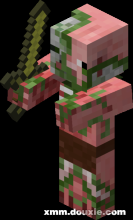

| 名称 | 基础属性 | 简介 | 图示 |
|---|---|---|---|
| 史蒂夫（Steve） | 基础攻击力：1 生命：20 护甲：自定义 |
史蒂夫是第一个用户操作的角色。他曾经在第二个测试版本以及往后的几个版本中出现，当时Steve被称作人类，只能以接近抽搐的方式在区块上奔跑。默认玩家称作“Steve？”（因为“Steve”这个名字不是他真正的名字，所以Notch在后面加了一个问号）。 预设玩家的皮肤拥有棕色头发和蓝紫色眼睛，身穿蓝色衬衫，一条牛仔裤以及灰黑色的鞋。XBox360以及PE版的玩家可能拥有不同的皮肤。 | |
| 亚历克斯（Alex） | 基础攻击力：1 生命：20 护甲：自定义 |
Alex是1.8正式版更新的女角色，也是PE版0.11.0测试版的女角色。 观察她的正面通过金发辫子可判断性别为女性，观察她的背面会发现手臂体形偏小正版用户可自行在史蒂夫与亚历克斯之中选择一个角色。盗版用户默认为Alex。 Alex的音译各有不一，在此以亚历克斯为普遍译法，此外还有音译爱丽克丝等。 | |
| Herobrine | 基础攻击力：∞ 生命：∞ |
Herobrine是Minecraft有关社区创作出的一个恐怖故事的主角，需要用模组实现。他已成为Minecraft社区里的一个重要标志形象。有时在中文社区中被称为HIM（Herobrine in Minecraft）。 *Herobrine从未在任何版本的Minecraft中出现过。 |  |
| 村民（Villager） | 攻击：0 生命：20 |
村民是一种NPC。村民通常出现于村庄附近， 玩家可以与村民交易。村民被雷劈后会变成女巫 。1.14村庄与掠夺更新以后，村民将会有对应群系 和职业的服饰及工作台。工作台被破坏后将会变成 失业村民，暂时失去交易功能直到绑定新的工作台 。变成失业村民太久会变成傻子，永久丧失交易功能。 每一个村民将会对应一张床，到黑夜或劫掠模式时将会以 其为中心进行相应交互。 | |
| 流浪商人（Wandering Trader） | 攻击：0 生命：20 |
类似村民的生物，可以进行交易。流浪商人生成时会牵着行商羊驼。晚上会饮用隐身药水避免夜间怪物伤害，白天喝牛奶解除隐身。一段时间以后自动消失。 | |
| 猪（Pig） | 攻击：0 生命：10 |
猪是一种可骑乘的被动型生物，用马鞍骑乘，用萝卜钓竿控制方向。 | |
| 牛（Cow） | 攻击：0 生命：10 |
提供牛奶的生物。当牛死亡时会掉落皮革、生牛肉。 | |
| 鱿鱼（Squid） | 攻击：0 生命：10 |
受到攻击时会喷出墨汁。鱿鱼被杀死时，会掉落墨囊。 | |
| 鸡（Chicken） | 攻击：0 生命：4 |
与现实中的鸡相同，在1.4.2之前用小麦喂饲料，1.4.2之后则改用种子。鸡可以下蛋，扔出鸡蛋后有几率生成一只鸡。杀死后会有羽毛、生鸡肉（被烧死、火焰附加的剑杀死和火矢弓射死的掉落烤鸡肉）。 | |
| 蝙蝠（Bat） | 攻击：0 生命：6 |
是一种生成亮度和怪物一样(小于或等于7)的被动型生物。它们经常会发出吱吱的叫声，但不会做会影响游戏的事情，杀死后不会掉落东西。 | |
| 哞菇[蘑菇牛]（Mooshroom） | 攻击：0 生命：10 |
哞菇可利用剪刀获得红蘑菇（剪了以后会变成普通的牛），也可使用碗获得蘑菇汤（可以无限获得蘑菇汤）。用小麦进行喂养。 棕色哞菇不能自然生成。当红色哞菇被闪电击中时，会生成棕色哞菇。相反，被闪电再次劈中时会变重新变为红色哞菇。 | |
| 羊（Sheep） | 攻击：0 生命：8 |
与现实中的羊相同。会随意啃掉地上的草皮。玩家杀羊或用剪刀获得羊毛。(用剪刀剪的较多)用小麦吸引或给两只羊吃会生小羊。向羊用颜料身上的羊毛会变色，且永远不变。 (1.2版本后共有16种颜色)，当被剪掉羊毛的羊吃草时，羊毛会重新长出来。 | |
| 骷髅（Skeleton） | 生命：20 | 是一种白色的骨骼生物。会利用弓箭攻击玩家或是其他攻击它的生物，死后掉下骨头和箭也有小机率掉下附魔的弓。如骷髅没有拿弓（生成时携带了除了弓以外的武器或者随地捡起的），则其攻击方式与僵尸相近。 另外，骷髅会在右手持有一把弓，骷髅身型灰白色的骷髅、一张与僵尸相近灰白色脸。如果骷髅杀死爬行者，爬行者会掉落一张音乐唱片。 | |
| 爬行者（Creeper） | 生命：20 | 构思来自猪的模型因为错误所导致‘‘美丽的错误’’。是一种绿绿的、安静的，会埋伏等待玩家出现后点燃自己爆炸伤害玩家及周围环境的怪物。因为该怪物自爆后会导致周围的建筑物或地面等被它炸出一个大洞，辛辛苦苦盖好的建筑物毁于一旦，招来了专研于建筑的玩家的恐惧，因而有人将其音译成苦力怕。 外型是绿色的，身上有深绿色的斑点；没有手，有四只脚，体内富含三硝基甲苯（也就是TNT），爆炸前会滋滋作响和闪烁并膨胀。 | |
| 洞穴蜘蛛（CaveSpider） | 生命：20 | 是我的世界游戏中的第二种蜘蛛，且只会在废弃矿井中出没，因为洞穴蜘蛛不会自然的生成，只能从废弃矿坑的刷怪笼生成。洞穴蜘蛛有蓝色的身体，且被攻击后会中毒。洞穴蜘蛛的体型比蜘蛛小，高度约为一般蜘蛛的一半。蓝宝石华丽雨林即为洞穴蜘蛛的形象，洞穴蜘蛛在Minecraft中非常稀少，就跟蓝宝石华丽雨林在现实中类似，蓝宝石华丽玉林被列为濒临绝种生物。洞穴蜘蛛有毒，蓝宝石华丽雨林也有毒，且皆足以致死。这两种生物具及高相似度，因此洞穴蜘蛛有可能是参考蓝宝石华丽雨林而做出来的。 | |
| 恶魂（Ghast） | 生命：10 | 称地狱水母、地狱幽灵，是一种生成于下界的生物，血量只有10。外形为白色的类似水母的方形生物，有六条触手。会经常发出类似哭声、哽咽、悲鸣的叫声，死亡后会掉落恶魂之泪和火药，但通常会直接掉到岩浆里或火里而不能拾取。 恶魂体型庞大，看见玩家时会射出火焰弹来攻击，玩家可利用任何物件（包括手）将火球击回，恶魂碰到岩浆不会受伤，恶魂以类似水母在空中“游泳”，即飞行来移动。 而且你用弓箭射他是有用的，他是不透明的的，用它喷的火球打他能对他造成伤害。（恶魂被自己的火球打到会造成1000点的伤害） 恶魂在下界里5*5*5的空间即可生成，没有光照限制，但生成失败率高达90%多。 | |
| 史莱姆（Slime） | 生命：1/5/10 | 然生成的史莱姆依体型可以分成三种:大型、中型、小型。当大型或中型史莱姆死亡时，会分裂成2—4个更小的史莱姆，当小型史莱姆死亡时，会掉落黏液球。史莱姆可以存在更大型的，但不会自然产生。巨型史莱姆死亡时会分裂成两个体形为原来二分之一的史莱姆。（史莱姆生成时都是朝东方的，即使把史莱姆推向其他方向，也会转回去的。）史莱姆比较稀少。超平坦模式会打搅你正常游戏（数量过多，声音大）。 在三种会自然生成的史莱姆中，最小的史莱姆因为太小而无法对玩家造成有效攻击(即不会损血)，也因此也被玩家当成宠物来养。 史莱姆会以跳来移动，若史莱姆掉到水里，将会沉到水底，然后死亡消失，这是合理的，因为在现实中那些物质可溶于水。 | |
| 僵尸猪人（ZombiePigman） | 生命：20 | 生成在下界的中立生物。他们和僵尸是类似的，只是颜色是粉红色，而明显与僵尸不同的是，他们手上有拿东西，拿的是黄金剑，有时会拿附魔黄金剑。他的装备有时会掉落。 僵尸猪人的外形与僵尸相似，因为其为同一个模型，但它的颜色是粉红色，和猪一样，除此之外，还有绿、白相间的腐烂的肉，手上持有金剑，但有时看起来是绿色的，缠着腰布也能看到一部分骨头。 在万圣节时，有一定的机率会出现戴着南瓜的僵尸猪人。 僵尸猪人会出现于下界，一般以4-10只成群出现，会远离地狱幽灵和悬崖。若玩家攻击一只僵尸猪人，也会激怒受攻击的僵尸猪人32格外的僵尸猪人，导致其他僵尸猪人去攻击玩家。当太阳出来时，僵尸猪人和普通的僵尸、骷髅一样会着火，但是火无法杀死僵尸猪人。 僵尸猪人不怕火烧，不会着火也不会受到任何火焰伤害。此外僵尸猪人能在岩浆内游泳，并且在熔岩内游泳很快，有时甚至比玩家在水里移动的速度还快。僵尸猪人有穿着装甲。还有幼年僵尸猪人，但是只能在使用僵尸猪人重生蛋很少几率地生成。 猪被雷劈后会成为僵尸猪人。 在1.16下界更新中，更名为僵尸猪灵，同时材质也发生了变化。 |  |
| 末影人（Enderman） | 生命：40 | 称小黑，是一种长得很高(3格高)，全身灰黑色，眼睛发出紫光，身体附近有紫色雪片缠绕的长手长腿的人型生物。末影人能高速移动，看起来像瞬移，也可以瞬移过一堵墙（有两堵墙或更多不可以），一但瞬移时碰到水会扣血，并不时拾起附近方块（有些他不能捡），试图观察末影人的眼会遭到末影人的攻击，头上戴着南瓜的时看他不会被攻击。 ※南瓜可当作头盔。 传言末影人是作者用美国都市传说里的slender man来制造出来的。末影人碰到远程武器，像箭、雪球、恶魂的火球、鸡蛋等会瞬移走。 特别之处，当玩家直视他或任何一个生物打到他时（你不用希望骷髅用箭射他），就会被激怒，拿起附近方块会对玩家作出攻击。因此末影人受关注的程度仅次于爬行者，且因具有特殊能力，已被外界评论为:瞬间移动、会拿起方块的能力、会偷东西的生物 末影人全身漆黑，有修长的四肢以及纤细的身体。会发光的紫色双眼，身体会发出与紫色雪片效果。当对生物对他作出攻击或玩家看他腿的上面时，他会张开嘴并晃动身体，同时会发出不同的声音使玩家恐惧，当它们瞬移时，会出现于在玩家周围不同地方。 末影人会在主世界及末地在光度7以下生成 ，当末影人触碰到水或者雨的时候会受到伤害并瞬移到安全的地方（没雨或水的地方，包括你的房子或地底）。白天时未被激怒的末影人会拿着方块乱走。 末影人一个知名的怪物，仅次于苦力怕，由于具有特殊能力，已被外界给予评论。多数论坛中经常拿他开玩笑, 而且有关末影人的研究在互联网上是多见的, 并且相关的衍生作品也层出不穷，因此，末影人受关注的程度仅次于爬行者，且因具有特殊能力，但他很怕水，所以下雨时会不断损血。 | |
| 烈焰人（Blaze） | 生命：20 | 又称烈焰神，是一种出没于下界要塞的怪物，外型为由 燃烧的火焰和烟雾所组成的人形怪物，会发出金属状的声音。烈焰人能飞行，并且会喷出火球来攻击，每次至少可以连续发射3次，但每次发射之后皆须要在过一段时间才能再发出火球攻击。死亡后有一定几率掉落烈焰棒（主机版额外掉落萤石粉）。 它只会生成与亮度小于12、Y轴等于烈焰人刷怪箱上下3格、在下界要塞中或刷怪笼中。 | |
| 蠹虫（Silverfish） | 生命：4 | 又称银鱼、衣鱼，其外形是一只节肢动物，它们可以躲在石质方块里，例如:石砖、鹅卵石和石头，若但蠹虫钻进去后，由于该方块会被替换为97号方块（石头怪物蛋），因此需要3秒的时间(和挖除沙质方块的时间一样)才可以挖掉或破坏。 当他躲藏的方块是被玩家摧毁时，蠹虫会从方块里跳出来，对摧毁方块的玩家发动攻击；但若方块是被炸毁的蠹虫会死在里面。蠹虫不会直接伤害玩家，除非蠹虫被玩家激怒(如打它，或毁了他的藏身方块)，但他们会成群攻击玩家，并能推动玩家。当有玩家攻击蠹虫时，附近的蠹虫或躲在方块内的蠹虫会全部被激怒，并朝着玩家攻击。 另外，蠹虫刷怪笼可以在地牢里找到。 |